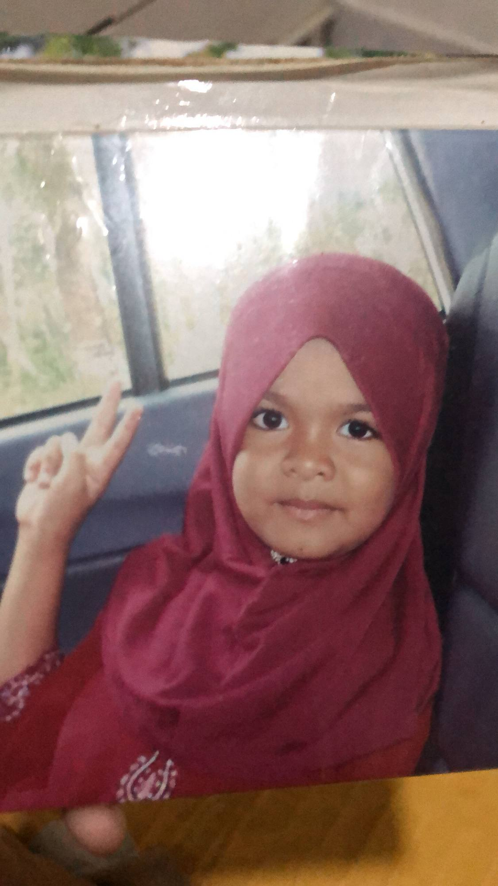
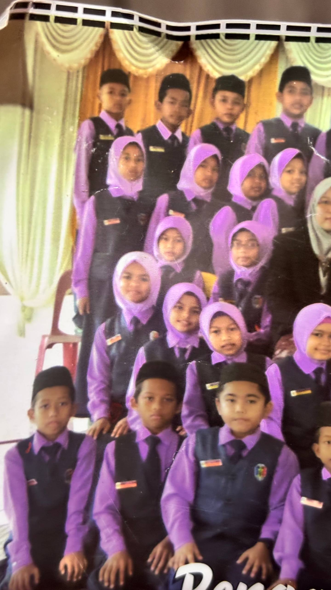
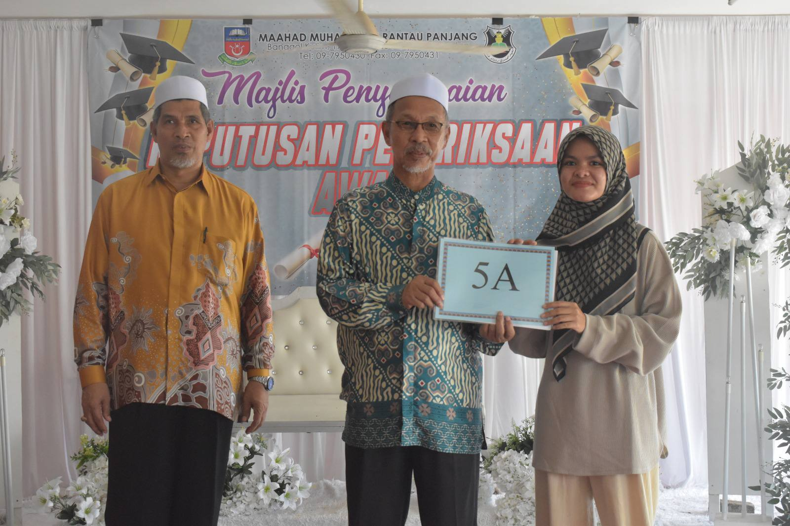
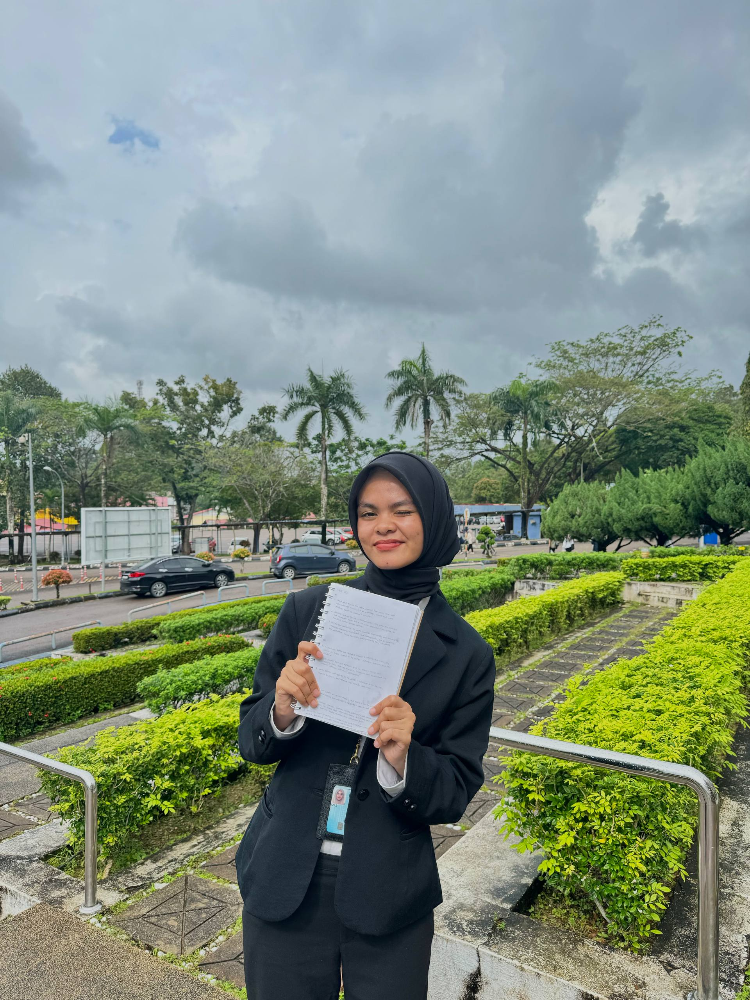

My Education Journey 🎓
Here’s a glimpse of my education path from kindergarten to university.
Kindergarten (Pasti)
Pasti at Rantau Panjang, Kelantan
My very first learning experience! Pasti was where i discovered the joy of learning, colouring, and singing with friends every morning. It's also where my curiosity started to grow, little me who loved to ask "why" about almost everything.
Primary School (2012 – 2017)
SK Kubang Kuau, Kelantan
My primary school years were some of the most memorable moments of my childhood. I was trusted to serve as the Assistant Prefect and was and active student in both academics and co-curicular activities. I represented the school in Arabic Storytelling and Malay Public Speaking (Pidato) competitions, and proudly received the Tokoh Kokurikulum award and 5A in UPSR for my participation and achievements 📘
High School (2018 – 2023)
Maahad Muhammadi Rantau Panjang (MMRP)
High school was a beautiful chapter filled with growth and teamwork. I actively joined nasyid competitions and marching (kawad kaki) teams at state level, experience that taught me leadership, harmony, and confidence. Those years of hard work paid off when I proudly achieved Jayyid Jiddan in SMU and 5A's in SPM, a milestone that motivated me to continue striving for excellence.
Diploma (2023 – Present)
Universiti Teknologi MARA (UiTM) — Diploma in Information Management
Entering UiTM has been one of the most awarding parts of my journey. I'm currently pursuing mg Diploma in Information Management, where I've learned about data, research, and information systems. Beyond academics, I enjoy joining club events and creative projects that help me grow more confident and independent. Every semester feels like a new opportunity to become the best version of myself.